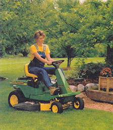
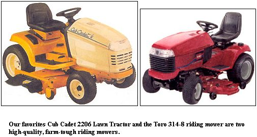
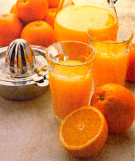

What is the bestriding mower for my money?
MARK
Melrose, New Mexico
First, avoid no-name or house-brand, bargain-basement power equipment from garden centers, mall or hardware stores unless the stores have their own in-house service and repair facilities with an experienced, small-engine mechanic. Mower engines work very hard and they need care. It helps, too, if there is a nearby, franchised repair outfit to chase "limited" warranties if engines or transaxles go bad during the first year. Properly maintained engines should last a minimum of 2,500 hours. The less-than - premium wheel bearings, electrical equipment, tin and paint, however, need frequent oiling, waxing or cleaning in order to remain in top shape.
Don't buy a new model from a discount mall store unless it is a name brand such as Toro, Simplicity, MTD, Bolens, White or Cub Cadet. If purchasing a used, new or late model, you should buy from the most reputable and longest-established servicing dealers in your area. They will have prominent ads in the Yellow Pages under "Lawn Mowers." The independent makers of rotary mowers all build good riding mowers, too. Our preference is farm-tough lawn equipment from the surviving farm tractor makers: John Deere, Ford, Case, New Holland (Boomer), Honda and Husquevarna make high-quality, though not inexpensive, machines. And there's always Sears. Check the major discounts listed in Sears sale catalogs and newspaper ads, but insist on the models in the media ads rather than store-floor discounted models.
If you have a big spread, look in the classifieds for a Farmall Cub, Farmall "A" or other good old (1940s-'50s) farm tractor with a newer Woods mower deck attachment. Expect to pay around $2,500 for a good one, and be sure that there's a competent old-tractor mechanic around.
Buying used lawn equipment direct from the owner can be a false economy unless you know personally that the owner has taken care of it. Oil and air filter elements must be changed regularly, or the dust and grit that is continually blown around any mower engine can get inside and grind it to junk in a single season. An owner can always put in new oil and air filters at the time of sale to make it appear well-kept, so you should give the mower a good once-over to confirm maintenance claims. Check the inside of the oil fill cap - a cruddy buildup suggests infrequent oil changes. Also, have the owner remove the air cleaner housing cover and the air filter element(s). Make sure that the inside of the air cleaner housing behind the element is dust-free, and that the throttle plate of the carburetor (if visible) is in good condition. If the throttle plate is discolored substandard gas may have been used. If the inner air filter housing is covered in fine dust, chances are the elements haven't been changed often enough, or, if changed, weren't seated properly. If the engine has been running on bad gas and eating dust, it will be pretty worn out for its age.
A better bet for a used mower is "the old guy who works on lawn mowers," typically found on the outskirts of every country town. Usually a long-retired farmer or mechanic, his yard will be cluttered with mowers of all types and ages $50 to $100 for a rotary, $75 to $250 for an old beltdriven rider. Most will have been rescued from the junkyard and tinkered with enough to run well for one season at least, maybe two. That's about as much of a guarantee as you would get from a new model costing ten times the amount. Just be sure the engine doesn't smoke, clank or vibrate noticeably once it warms up.
Finally, have you ever considered a few sheep? They work cheaply and exhaust fume-free, don't assault your ears with engine roar, keep the grass well-trimmed and fertilized, and produce wool, mutton and cute little lambs. All they need is a good fence, a shed and lambing pens, a little attention in early spring, clean water year- round, and a little grain and hay in the winter.
I have been told that valerian root has the properties of a muscle relaxant and canalso help control anxiety. Is this the case?
JESSE BORDERS
Northglenn, Colorado
Valerian root flower and leaves
A natural tranquilizer, valerian is a European perennial herb that produces several medically active compounds including iridoids (valepotriates) that have a natural calming ef fect on the human nervous system. Despite its nauseating odor (think old sweatsocks), valerian roots and rhizomes have been dried, ground and taken as a relaxant or mood booster since Roman times in the form of a powder, tincture or tea. Indeed, the word va lerian derives
from the Latin "valere," mean ing "to be well," and is listed as a cure-all in Medieval botanical/medical manuscripts. Available today in a relatively odor-free pill or pungent capsule form, valerian is widely used to treat stress-related problems. At a low dosage, it acts as a calming rather than a sedative agent, and does not dull the mind or senses. Valerian moderates anxiety and is pre scribed as a method of curing insomnia. Valerian's systemic relaxing effect makes it an excellent muscle relaxant that is helpful for stress-induced muscle tension including asthma spasms, irritable bowel syndrome and menstrual discomfort. It can be combined with a number of calming herbal medications to reduce the high blood pressure brought on by stress.
Be advised that valerian is one of the medicinal herbs that was attacked during this past summer by The Center for Science in the Public Interest, a self-appointed public health watchdog. These are the same food-supply alarmists who alerted us to the untold dangers of movie theater popcorn, which they claimed was a major public health hazard due to the high-cholesterol coconut oil used to pop it and give it that uniquely yummy movie house flavor.
Read a MOTHER interview with Dr. Richard Firshein about "Nature's Mood Boosters" (May, 2000) for expert advice on St. John's wort, ginkgo, kava-kava, tyrosine and SAM-e.
Someone recently asked me how much chlorine (bleach) to add to stored drinking water to keep it safe. 1 am a registered pharmacist and was asked this question by a customer who was outfitting his home with a supply of water (in case the Y2K bug actually happens in 2001 instead). I am not sure that 1 agree with this storage idea. Do you have any suggestions?
LARRY YOUNG
Sorry to hear that the vastly overdone Y2K hype alarmed your good customers. We tried hard to tell everyone that the sky was actually not likely to fall, but there were clearly some holdouts. Nonetheless, storing an emergency water supply is a good idea for anyone who is dependent on a municipal water supply or public electric grid-powered well pump and has experienced some supply problems in the past. Our favorite food- or water-preservation authority, Dr. Shirley VanGarde from Oregon State University, advises us to use a name-brand bleach (we use Clorox) that contains at least 5.25% sodium hypochlorite. (Sometimes, makers of no-name brands have been known to skimp on this prime ingredient.) According to Dr. VanGarde, you should add two drops of bleach per quart of water, eight drops per gallon and 1/2 teaspoon per five-gallon container. Tell your customers to cap the bottles tightly and to store them on their sides, as free chlorine from the bleach can evaporate due to a loose cap. Before use, aerate the water to remove any chlorine taste. Chlorine from the bleach will dissipate quickly and naturally in the high heat of cooking, and the residual sodium is negligible.
I hear about the virtues of Juicing" all the time. Is it as wonderful as claimed? Can it cure disease and restore youth? I have my doubts. What is the difference between juicing" oranges and squeezing or eating an orange? Eating or juicing a carrot? Do you really need the juicing machines that are peddled on TV?
JAN
Cloverdale, Indiana
People have enjoyed and benefited from drinking fruit and vegetable juices for ages - fresh-squeezed orange juice and pressed raw-apple cider, cooked tomato juice and carrot nectar. Even vitamin C-rich sauerkraut juice was used to prevent scurvy onboard early sailing vessels on extended voyages. More recently, natural health stores have offered freshly extracted raw carrot juice and all manner of other produce, including the green, weed-flavored juice derived from wheat grass (truly an acquired taste). These are touted as a quickly consumed and digested natural vitamin-mineral tonics. No argument there.
'Juicing" (with a capital "J") has parlayed the obvious and thoroughly documented the nutritional benefits of raw fruit and vegetables-as juice or eaten out of hand - into one of the latest and most persistent in a long line of fad diets. Juicing is presented through persuasive pitching as the road to health - indeed, as a way of life. Its claims to cure disease and prolong life are just that - unsubstantiated, personal claims made by earnest and fast-talking sales folks. Its strongest selling point is an attractive "labor-saving" kitchen gadget - a reasonably well made machine that combines a grinder and centrifuge to mash up undeniably nutritious raw foods - then separate the pulp from the juice, which is touted as "packed with vitamins and minerals." No argument there, either.
The problem is, "Juicing" removes and discards the pulp - 100% dietary fiber that ishighly touted elsewhere as a gut-cleansing, cancer-preventing boon to health. It seems to us that "Juicing" removes half of the dietary value from raw fruits and vegetables.
In the old days, pulp was scraped off a carrot or apple section with the back of a knife by parents trying to feed their babies or folks who had trouble chewing or digesting raw produce. Today, fruits and vegetables can be ground into a juicy pulp in any food processor, or a powerful food blender, such as Vita-Mix (our favorite) can be used to whack pulp fiber to easily ingested and digested microbits - that, or lose half the total potential food value with a juicing machine.
In sum, "Juicing" is a harmless exercise based on questionable claims that are persuasively presented with the aid of TV tricks, reinforced by the lure of a mechanical kitchen novelty. If it persuades gadget-loving folks to eat more unprocessed fruits and vegetables than they normally would, the net effect is beneficial. At worst, users are forced to find their dietary bulk elsewhere.
|
 If you're shopping for new, one of our favorites is John Deere's SX85 model. |
 "Juicing" removes half of the dietary value from raw fruits and vegetables. |
|
|
 |
|
|